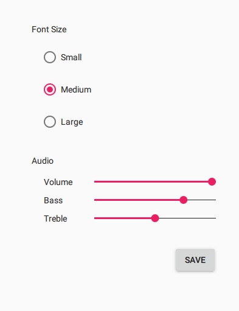
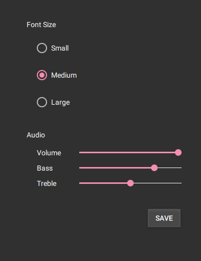
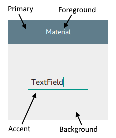
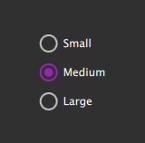
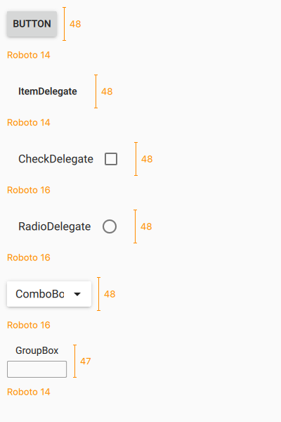
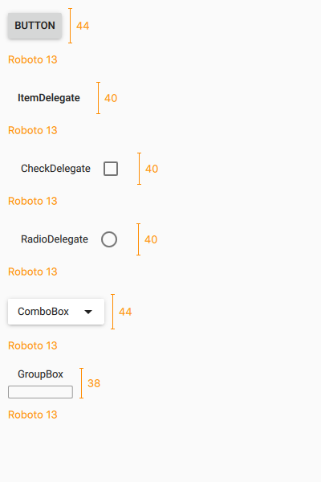
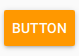
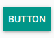
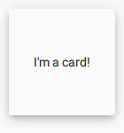
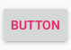

Material Style
The Material Style is based on the Google Material Design Guidelines. More...
| Import Statement: | import QtQuick.Controls.Material 2.12 |
| Since: | Qt 5.7 |
Attached Properties
- accent : color
- background : color
- elevation : int
- foreground : color
- primary : color
- theme : enumeration
Attached Methods
- color color(enumeration predefined, enumeration shade)
Detailed Description
The Material style is based on the Google Material Design Guidelines. It allows for a unified experience across platforms and device sizes.
 The Material style in light theme |  The Material style in dark theme |
To run an application with the Material style, see Using Styles in Qt Quick Controls.
Note: The Material style is not a native Android style. The Material style is a 100% cross-platform Qt Quick Controls style implementation that follows the Google Material Design Guidelines. The style runs on any platform, and looks more or less identical everywhere. Minor differences may occur due to differences in available system fonts and font rendering engines.
Customization
The Material style allows customizing five attributes, theme, primary, accent, foreground, and background.

All attributes can be specified for any window or item, and they automatically propagate to children in the same manner as fonts. In the following example, the window and all three radio buttons appear in the dark theme using a purple accent color:
import QtQuick 2.12 import QtQuick.Controls 2.12 import QtQuick.Controls.Material 2.12 ApplicationWindow { visible: true Material.theme: Material.Dark Material.accent: Material.Purple Column { anchors.centerIn: parent RadioButton { text: qsTr("Small") } RadioButton { text: qsTr("Medium"); checked: true } RadioButton { text: qsTr("Large") } } } |  |
In addition to specifying the attributes in QML, it is also possible to specify them via environment variables or in a configuration file. Attributes specified in QML take precedence over all other methods.
Configuration File
| Variable | Description |
|---|---|
Theme | Specifies the default Material theme. The value can be one of the available themes, for example "Dark". |
Variant | Specifies the Material variant. The Material Design has two variants: a normal variant designed for touch devices, and a dense variant for desktop. The dense variant uses smaller sizes for controls and their fonts. The value can be |
Accent | Specifies the default Material accent color. The value can be any color, but it is recommended to use one of the pre-defined Material colors, for example "Teal". |
Primary | Specifies the default Material primary color. The value can be any color, but it is recommended to use one of the pre-defined Material colors, for example "BlueGrey". |
Foreground | Specifies the default Material foreground color. The value can be any color, or one of the pre-defined Material colors, for example "Brown". |
Background | Specifies the default Material background color. The value can be any color, or one of the pre-defined Material colors, for example "Grey". |
See Qt Quick Controls Configuration File for more details about the configuration file.
Environment Variables
| Variable | Description |
|---|---|
QT_QUICK_CONTROLS_MATERIAL_THEME | Specifies the default Material theme. The value can be one of the available themes, for example "Dark". |
QT_QUICK_CONTROLS_MATERIAL_VARIANT | Specifies the Material variant. The Material Design has two variants: a normal variant designed for touch devices, and a dense variant for desktop. The dense variant uses smaller sizes for controls and their fonts. The value can be |
QT_QUICK_CONTROLS_MATERIAL_ACCENT | Specifies the default Material accent color. The value can be any color, but it is recommended to use one of the pre-defined Material colors, for example "Teal". |
QT_QUICK_CONTROLS_MATERIAL_PRIMARY | Specifies the default Material primary color. The value can be any color, but it is recommended to use one of the pre-defined Material colors, for example "BlueGrey". |
QT_QUICK_CONTROLS_MATERIAL_FOREGROUND | Specifies the default Material foreground color. The value can be any color, or one of the pre-defined Material colors, for example "Brown". |
QT_QUICK_CONTROLS_MATERIAL_BACKGROUND | Specifies the default Material background color. The value can be any color, or one of the pre-defined Material colors, for example "Grey". |
See Supported Environment Variables in Qt Quick Controls for the full list of supported environment variables.
Dependency
The Material style must be separately imported to gain access to the attributes that are specific to the Material style. It should be noted that regardless of the references to the Material style, the same application code runs with any other style. Material-specific attributes only have an effect when the application is run with the Material style.
If the Material style is imported in a QML file that is always loaded, the Material style must be deployed with the application in order to be able to run the application regardless of which style the application is run with. By using file selectors, style-specific tweaks can be applied without creating a hard dependency to a style.
Pre-defined Material Colors
Even though primary and accent can be any color, it is recommended to use one of the pre-defined colors that have been designed to work well with the rest of the Material style palette:
Available pre-defined colors:
| Constant | Description |
|---|---|
Material.Red | #F44336 |
Material.Pink | #E91E63 (default accent) |
Material.Purple | #9C27B0 |
Material.DeepPurple | #673AB7 |
Material.Indigo | #3F51B5 (default primary) |
Material.Blue | #2196F3 |
Material.LightBlue | #03A9F4 |
Material.Cyan | #00BCD4 |
Material.Teal | #009688 |
Material.Green | #4CAF50 |
Material.LightGreen | #8BC34A |
Material.Lime | #CDDC39 |
Material.Yellow | #FFEB3B |
Material.Amber | #FFC107 |
Material.Orange | #FF9800 |
Material.DeepOrange | #FF5722 |
Material.Brown | #795548 |
Material.Grey | #9E9E9E |
Material.BlueGrey | #607D8B |
When the dark theme is in use, different shades of the pre-defined colors are used by default:
| Constant | Description |
|---|---|
Material.Red | #EF9A9A |
Material.Pink | #F48FB1 (default accent) |
Material.Purple | #CE93D8 |
Material.DeepPurple | #B39DDB |
Material.Indigo | #9FA8DA (default primary) |
Material.Blue | #90CAF9 |
Material.LightBlue | #81D4FA |
Material.Cyan | #80DEEA |
Material.Teal | #80CBC4 |
Material.Green | #A5D6A7 |
Material.LightGreen | #C5E1A5 |
Material.Lime | #E6EE9C |
Material.Yellow | #FFF59D |
Material.Amber | #FFE082 |
Material.Orange | #FFCC80 |
Material.DeepOrange | #FFAB91 |
Material.Brown | #BCAAA4 |
Material.Grey | #EEEEEE |
Material.BlueGrey | #B0BEC5 |
Pre-defined Shades
There are several different shades of each pre-defined color that can be passed to the Material.color() function:
| Constant | Value |
|---|---|
Material.Shade50 | |
Material.Shade100 | |
Material.Shade200 | |
Material.Shade300 | |
Material.Shade400 | |
Material.Shade500 | |
Material.Shade600 | |
Material.Shade700 | |
Material.Shade800 | |
Material.Shade900 | |
Material.ShadeA100 | |
Material.ShadeA200 | |
Material.ShadeA400 | |
Material.ShadeA700 |
See also Default Style, Universal Style
Variants
The Material style also supports a dense variant, where controls like buttons and delegates are smaller in height and use smaller font sizes. It is recommended to use the dense variant on desktop platforms, where a mouse and keyboard allow more precise and flexible user interaction.
To use the dense variant, either set the QT_QUICK_CONTROLS_MATERIAL_VARIANT environment variable to Dense, or specify Variant=Dense in the qtquickcontrols2.conf file. The default value in both cases is Normal.
The following images illustrate the differences between some of the controls when using the normal and dense variants:
 |  |
Note that the heights shown above may vary based on differences in fonts across platforms.
Attached Property Documentation
Material.accent : color |
This attached property holds the accent color of the theme. The property can be attached to any window or item. The value is propagated to children.
The default value is Material.Pink.
In the following example, the accent color of the highlighted button is changed to Material.Orange:
Button { text: qsTr("Button") highlighted: true Material.accent: Material.Orange } |  |
Note: Even though the accent can be any color, it is recommended to use one of the pre-defined Material colors that have been designed to work well with the rest of the Material style palette.
Material.background : color |
This attached property holds the background color of the theme. The property can be attached to any window or item. The value is propagated to children.
The default value is theme-specific (light or dark).
In the following example, the background color of the button is changed to Material.Teal:
Button { text: qsTr("Button") highlighted: true Material.background: Material.Teal } |  |
Material.elevation : int |
This attached property holds the elevation of the control. The higher the elevation, the deeper the shadow. The property can be attached to any control, but not all controls visualize elevation.
The default value is control-specific.
In the following example, the elevation of the pane is set to 6 in order to achieve the look of an elevated card:
Pane { width: 120 height: 120 Material.elevation: 6 Label { text: qsTr("I'm a card!") anchors.centerIn: parent } } |  |
Material.foreground : color |
This attached property holds the foreground color of the theme. The property can be attached to any window or item. The value is propagated to children.
The default value is theme-specific (light or dark).
In the following example, the foreground color of the button is set to Material.Pink:
Button { text: qsTr("Button") Material.foreground: Material.Pink } |  |
Material.primary : color |
This attached property holds the primary color of the theme. The property can be attached to any window or item. The value is propagated to children.
The primary color is used as the background color of ToolBar by default.
The default value is Material.Indigo.
Note: Even though the primary can be any color, it is recommended to use one of the pre-defined Material colors that have been designed to work well with the rest of the Material style palette.
Material.theme : enumeration |
This attached property holds whether the theme is light or dark. The property can be attached to any window or item. The value is propagated to children.
Available themes:
| Constant | Description |
|---|---|
Material.Light | Light theme (default) |
Material.Dark | Dark theme |
Material.System | System theme |
Setting the theme to System chooses either the light or dark theme based on the system theme colors. However, when reading the value of the theme property, the value is never System, but the actual theme.
In the following example, the theme for both the pane and the button is set to Material.Dark:
Attached Method Documentation
color color(enumeration predefined, enumeration shade) |
This attached method returns the effective color value of the specified pre-defined Material color combined with the given shade. If omitted, the shade argument defaults to Material.Shade500.
Rectangle { color: Material.color(Material.Red) }